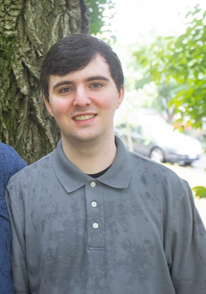

Meet Me
Hello my name is Noah Funderburgh. I'm 23 and lived in Portland, Oregon most of my life but have I recently moved to Phoenix, AZ because I got tired of the cold weather. I am transferring over from Portland state university to GCU. I have my associates in computer science and am currently working towards a bachelor's in software development. A little about me is I am into video games, crypto, NFT's, and sports. I have played video games for as long as I can remember. I play all different types of games from fps to mmorpg's or even moba's depending on how I am feeling. More recently I have got into crypto. From crypto I got into NFT's which are essentially a form of digital art. I also love watching basketball in my free time even though I am terrible at it.